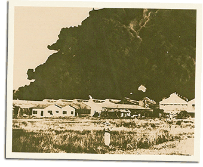

|
j
a v a s c r i p t |
December 26, 1941

Pandacan Oil Supplies Burn
At 1000 a blaze started in the Pandacan oil district, and what a hellish spectacle it’s turning out to be! Columns of 3,000-foot-high black smoke coil up into a darkening, never-ending cloud. Texaco is wiped out, Socony is going, and in the path of the 300-foot flames stand the as yet untouched tanks of Associated Oil. If the Pasig River didn’t bound the district, the fire would have spread to the city. 1100: Maurice and I were on the 7th floor of the Wilson Building when the air-raid alarm went on. We chose to stay as others ran to the basement. On one side last night’s catastrophic fire in Cavite raged on; on the other yet a third fire burned right beside the huge Pandacan blaze. On the Bay side, the thirty-minute main feature was about to start. Nine Japanese planes in a beautiful, perfect V-formation approached at 4-5,000 feet. Their target for the day: our magnificent Pier 7. Now Pier 7 is no joke. It’s over 1,000-feet long, the largest in the Far East and 4th or 5th in the world — not a small target. The first run saw 18 bombs straddle the pier, throwing tremendous spouts of water into the air. Twice more they came to release their missiles, and twice more they missed. The fourth time, they dropped their bombs parallel to the shoreline in a huge straddle, hoping to get Pier 7 or 5 or 3 or 1. The first missed by 200 feet; the rest were too far out to hit the shorter piers. Finally they dropped a volley around a 5,000-ton vessel moored in the middle of the Bay — and also missed. Then they departed — embarrassment trailing close behind. An hour later 18 brand-spanking-new twin-motored jobs appeared while I was near the People’s Trust and Bank Building. When bombs started landing nearby I ran inside and dropped flat on my stomach — my first scare in these 19 days. As I write this at 1930, the Pandacan fire has yet to reach a climax after raging with tremendous fury all day. All told we’ve had five raids on the undefended city of Manila. The army having taken out most of its supplies, Quezon, MacArthur and Sayre declared it an Open City, and moved out. Manila’s reaction was mixed. The ladies thought it fair; the gentlemen, full of bravado, wanted to fight. Up in Baguio, discussions were over. Japanese troops had been entering the city day-and-night. |
|
|
|
|